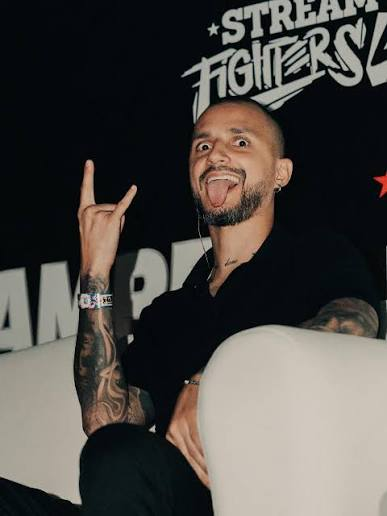
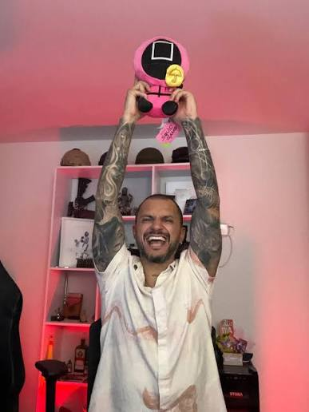
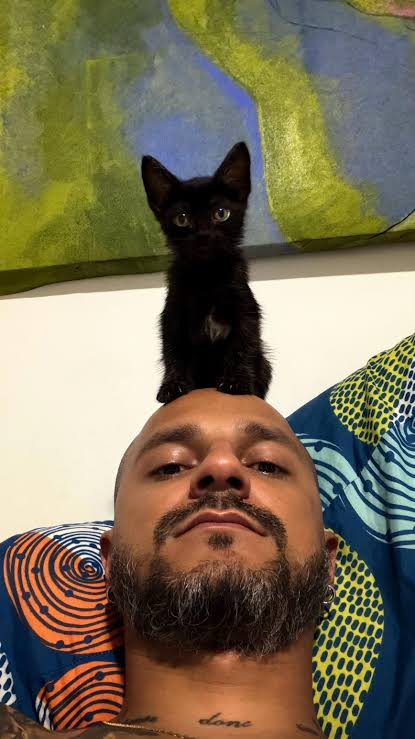

David Muñetones, también conocido como "El Muñe", es un reconocido Streamer y YouTuber colombiano. Nacido en Medellín, Colombia, un 3 de septiembre, El Muñe se ha convertido en una de las figuras más queridas y comentadas del entretenimiento en el país gracias a su inconfundible estilo narrativo, su carisma y su característico humor.

David comenzó su camino en las plataformas digitales en marzo de 2019. En sus primeros años, experimentó con diferentes formatos de contenido que incluían vlogs, consejos de estilo, reseñas de comida y curiosidades. Su capacidad para conectar con el público paisa y contar historias cotidianas le permitió construir una audiencia sólida que hoy supera los 450,000 suscriptores en su canal El Muñe en YouTube.
Con el auge de las transmisiones en vivo, "El Muñe" expandió su presencia a plataformas de streaming. Pasó por la época dorada del roleplay en videojuegos y el contenido de Just Chatting (Charlas). Actualmente, es Streamer Oficial de Kick, transmitiendo de forma constante en su canal Kick - @elmune donde reacciona a videos, interactúa con su chat y comparte debates en directo.
El verdadero sello de identidad de David es su sección llamada "Anecdatario". En este formato tipo podcast, relata con lujo de detalles e hilaridad historias de su pasado. Sus videos más icónicos y virales son aquellos donde narra sus vivencias prestando el servicio militar obligatorio en Colombia, explicando desde las dinámicas internas de los cuarteles hasta las anécdotas más absurdas que vivió con sus superiores y compañeros.

Es el adorable gato negro de El Muñe. Este felino de pelaje completamente oscuro y ojos brillantes llegó a la vida del creador de contenido para ganarse tanto su cariño como el de sus seguidores.
Aunque es sumamente tierno, El Muñe ha compartido en sus redes que también es muy travieso, juguetón y mimoso, ya que constantemente lo interrumpe mientras trabaja o hace stream.
El origen de su nombre: Su nombre es un divertido juego de palabras en honor al histórico líder activista estadounidense Martin Luther King Jr. (y al teólogo Martín Lutero), adaptándolo al mundo felino como un toque original y con mucha personalidad.
¡Sigue el contenido de El Muñe en todas sus plataformas oficiales!